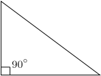

| Според страните |
Според ъглите |
| Вид |
Елементи |
Илюстрация |
Вид |
Елементи |
Илюстрация |
| Равностранен |
Три равни страни
Три равни ъгъла по 60о |
 |
Правоъгълен |
Един прав ъгъл – равен на 90о
Два остри ъгъла
Страната лежаща срещу правият ъгъл – хипотенуза, най-дългата страна във всеки правоъгълен триъгълник
Другите две страни - катети |
 |
| Равнобедрен |
Две равни страни – бедра
Третата страна – основа
Два равни ъгъла – при основата |
 |
Тъпоъгълен |
Един тъп ъгъл – по голям от 90о
Два остри ъгъла |
 |
| Разностранен |
Три различни по дължина страни
Три различни ъгъла |
 |
Остроъгълен |
Всички ъгли са остри – по-малки от 90о |
 |